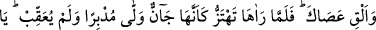
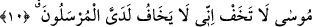
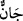

kelâmı olduğunu kendisiyle bildiği zarûrî bir ilim yaratmıştır.
Mûsâ (a.s.) Allah’ın kelâmını altı yönden işitti. Bütün azaları kulağı gibi olmuştur.
Yâni âhirette de olacağı gibi, bütün vücûdu kulak oldu. Kâmil-i vâsıl için dünyada
âhiretin hükmü geçerlidir.
10. Asânı at! Mûsâ (asâyı atıp) onu yılan gibi deprenir görünce dönüp arkasına
bakmadan kaçtı. (Kendisine dedik ki): Ey Mûsâ! Korkma; çünkü benim huzurumda
peygamberler korkmaz.
“Asânı at!” ifâdesi önceki “mübârek kılınmıştır” fiiline atfedilmiştir. Yâni ‘Ateşin
içinde bulunanlar mübârek kılınmıştır, asânı at’ diye seslenildi, demektir.
et-Te’vîlâtü’n-Necmiyye’de der ki: “İşâret etmektedir ki Hakk’ın nidâsını işiten ve
cemâlinin nurlarını müşâhede eden herkes himmet elinde Allah’tan başka ne dayanağı
varsa atar/bırakır. Allah’ın fazlından ve kereminden başka hiçbir şeye güvenip
dayanmaz.
Hak’tan gayrıya güvenmek, tarikatta küfür sayılır.
Ey dost, bu yolda Hakk’ın fazlından başkasına güvenme
“Mûsâ (asâyı atıp) onu yılan gibi deprenir görünce” Sanki şöyle buyrulmuştur:
Mûsâ (a.s.) elindeki asâyı attı ve asâ hızla sürünen bir yılan hâline dönüştü. Onun pek
hızlı hareket ettiğini, sağa sola gittiğini görünce...
“__WORD__ çabuk hareket eden hafif/küçük yılan demektir. Farsça “ejderha” denilen büyük
yılan çabuk hareket edip kıvrılmakta küçük yılana benzetilmiştir. “__WORD__ bir yılan
türüdür. Kara gözlü, eziyet vermeyen, evlerde çok rastlanan bir yılandır. Nitekim el-
Kâmûs’ta böyle geçmektedir.
Ebü’l-Leys der ki: “Doğrusu asâ, Fir’avn’un yanında ejderhâ, Tûr dağında ise küçük
yılan gibi olmuştur.”
Burada işâret vardır ki sûrette/maddî âlemde Allah’tan başka dayanılan her şey,
mânâda sâhibi için bir ejderhâdır. İşte bu sebepten Mesnevî’de şöyle der:
Gönülde yurt tutan her hayal
Mahşer günü bir sûrete bürünür
“Dönüp arkasına bakmadan kaçtı.” Mûsâ (a.s.) korkusundan kaçtığı halde geri
döndü, yüzünü çevirdi. Keşfü’l-esrâr’da der ki: “Mûsâ (a.s.) ona arkasını döndü ve sırt
çevirdi.”